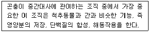

식물보호기사 (2008-05-11 기출문제)
1과목: 식물병리학
1. 봄의 배롱나무 흰가루병의 전염원은?
- 낙엽에서 동포자가 비산하여 1차 전염원이 된다.
- 낙엽에서 병자포자가 비산하여 1차 전염원이 된다.
- 낙엽에서 담자포자가 비산하여 1차 전염원이 된다.
- 낙엽에서 자낭포자가 비산하여 1차 전염원이 된다.
(정답률: 68%)

2. 배나무 붉은별무늬병의 중간기주는?
- 좀꿩다리
- 향나무
- 잣나무
- 매발톱나무
(정답률: 90%)
3. 식물병원 세균의 종 이하의 분류단위에서 pv.(pathovar)가 의미하는 것은?
- 형태적 특성이 다른 군
- 생화학적 특성이 다른 군
- 기주에 대한 병원성이 다른 군
- 생리적 특성이 다른 군
(정답률: 72%)
4. 다음 중 주로 수공감염(水孔感染)하는 작물의 병은?
- 감자 더뎅이병
- 보리 겉깜부기병
- 고구마 무름병
- 벼 흰잎마름병
(정답률: 72%)
5. 곡물저장에서 주로 문제가 되는 병원균은?
- Colletotrichum lagenarlum
- Achlya oryza
- Pythium spp.
- Aspergillus flavus
(정답률: 77%)
6. 샤이고메터(shigometer)에 대한 설명으로 옳은 것은?
- 식물 바이러스병의 진단에 이용되는 기기이다.
- 수목의 목재썩음병의 진단에 이용되는 기기이다.
- 수목의 파이토플라스마 병의 진단에 이용되는 기기이다.
- 수목의 선충(nematode)감염을 진단하는 기기이다.
(정답률: 74%)
7. 피이토알렉신(Phytoalexin)의 생성 기작으로 가장 적합한 설명은?
- 기주가 단독으로 생성한다.
- .병원균이 단독으로 생성한다.
- 기주와 병원균의 상호 작용에 의하여 기주가 생성한다.
- 기주와 병원균의 상호 작용에 의하여 병원균이 생성한다.
(정답률: 73%)
8. 사과나무 붉은별무늬병은 분류학상 어디에 속하는 병원균인가?
- 조균
- 불완전균
- 자낭균
- 담자균
(정답률: 65%)
9. 장마철 계속되는 강우 조건에서 발생하기 쉬운 맥류의 병은?
- 깜부기병
- 붉은곰팡이병
- 흰가루병
- 마름병
(정답률: 67%)
10. 오이 모자이크병 방제 방법에 대한 설명으로 틀린 것은?
- 저항성 품종을 재배한다.
- 포장주변 전염 가능성이 있는 잡초를 제거한다.
- 시설재배시 입구에 방충망 설치로 진딧물 침입을 막는다.
- 진딧물 방제를 위해 페나리몰 유제를 적기에 살포한다.
(정답률: 57%)
11. 식물병의 발생 예찰시 사용하지 않는 요인은?
- 기상
- 병원체의 밀도
- 작물의 생육
- 작물의 수량
(정답률: 64%)
12. 세균의 변이 가직이 아닌 것은?
- 접합
- 형질전환
- 형질도입
- 이핵현상
(정답률: 78%)
13. 페니트로티온 유제 50%를 0.⑤%로 희석하여 10a당 100L로 살포하고자 할 경우 10a당 필요한 약량(mL)은? (단, 페니트로티온 유제의 비중은 1.25로 한다.)
- 8
- 80
- 800
- 8000
(정답률: 59%)
14. 비생물성 병원이 아닌 것은?
- 대기 오염
- 영양 결핍
- 제초제
- 비로이드(viroid)
(정답률: 79%)
15. 기주 특이적 독소(host-specific toxin)는?
- Tabtoxin
- Victorin
- Fumaric acid
- Tentexin
(정답률: 73%)
16. 대부분의 병원균이나 병원세균은 발아 등에 최소한 얇은 막의 수분이 필요한데, 물 없이 식물체를 둘러싸고 있는 상대습도만 높아도 포자가 발아하고 침입하여 감염을 일으킬 수 있는 병원은?
- 흰가루병균
- 도열병균
- 잎마름병균
- 모잘록병균
(정답률: 61%)
17. 밀 줄기녹병의 특징적인 표징은?
- 균사체
- 균핵
- 포자퇴
- 자낭각
(정답률: 50%)
18. 사과ㆍ탄저병의 발병에 알맞은 기상 조건은?
- 저온, 저습
- 저온, 다습
- 고온, 다습
- 고온, 저습
(정답률: 75%)
19. 감자 더뎅이병을 일으키며, 균류와 같이 광범위한 분지성을 가지면서 그램양성균인 생물은?
- Spiroplasma
- Phytoplasma
- Streptomyces
- Viroid
(정답률: 87%)
20. Dienes 염색약은 어떤 식물병원에 의한 식물병의 진단에 사용되는 것인가?
- 파이토플라스마
- 바이러스
- 선충
- 담자균류
(정답률: 56%)
2과목: 농림해충학
21. 곤충 분류학상 딱정벌레목(目)에 속하지 않는 종은?
- 소나무좀
- 느티나무벼룩바구미
- 오리나무잎벌레
- 잣나무넓적잎벌
(정답률: 63%)
22. 우리나라에서 월동하지 못하는 비래 해충은?
- 애멸구
- 흰등멸구
- 끝동매미충
- 번개매미충
(정답률: 61%)
23. 배추벼룩잎벌레에 대한 설명으로 옳은 것은?
- 고추의 가장 대표적인 해충이다.
- 성충이 뿌리를 가해한다.
- 일반적으로 작물이 어린 시기에 피해가 많다.
- 번데기로 월동한다.
(정답률: 77%)
24. 곤충생장조절제(Insect Growth Regulator : IGR)의 설명으로 가장 적합한 것은?
- 화학적 약제의 처리 없이 해충을 방제하는 수단으로 이용된다.
- 곤충의 호흡 대사과정을 억제하는 약제를 칭한다.
- 곤충의 발육호르몬 작용을 억제 또는 증가 시킴으로써 생리교란을 일으켜 방제하는 수단으로 이용된다.
- 곤충 성장에 관여하는 신경계를 교란하는 약제를 통칭한다.
(정답률: 77%)
25. 다음이 설명하는 조직은?

- 침샘
- 전장
- 후장
- 지방체
(정답률: 78%)
26. 제충국제의 주요 성분을 이루는 피레스린(pyrethrin)에 대한 설명으로 틀린 것은?
- 쉽게 분해되지 않는다.
- 속효성이 있다.
- 인축에 안전하다.
- 생물 농축이 없다.
(정답률: 71%)
27. 같은 종내 개체간 교신을 위한 화학적 신호물질은?
- Hormone
- Pheromone
- Kairomone
- Allomone
(정답률: 83%)
28. 쥐똥밀깍지벌레의 암컷 성충의 형태는?
- 깍지는 1.0mm 정도이며 원형으로 황갈색 또는 적갈색이다.
- 깍지는 2.0~2.5mm이며 원추형이며 자갈색이다.
- 성충은 3.0~4.0mm이며 타원형이고 몸에 흰가루로 두껍게 덮혀있다.
- 깍지는 3.0~3.8mm로서 원형이며 백색 내지 회백색이다.
(정답률: 64%)
29. 곤충의 휴면(休眠)에 대한 설명으로 틀린 것은?
- 곤충이 살아남기 위한 하나의 방편으로 진화된 과정이다.
- 휴면을 유기하는 환경조건은 반드시 불리한 것 만이 아니라 불리한 조건이 시작될 것을 알려 주는 것이다.
- 휴면시에 곤충의 신진대사는 현저히 떨어진다.
- 곤충의 광주반응에 영향을 미치는 광의 수용기는 측안과 같은 시각기관이다.
(정답률: 78%)
30. 곤충의 고시류와 신시류의 분류 기준으로 옳은 것은?
- 변태의 정도에 따른 분류이다.
- 날개를 완전히 접을 수 있는지에 따른 분류이다.
- 날개의 유무에 따른 분류이다.
- 번데기의 부속지 움직임 유무에 따른 분류이다.
(정답률: 86%)
31. 씹는형의 입들을 갖지 않는 곤충은?
- 꽃노랑총채벌레
- 장수풍뎅이
- 벼메뚜기
- 이질바퀴
(정답률: 68%)
32. 곤충의 호흡에 관한 설명으로 틀린 것은?
- 체벽에 함입되어 만들어진 관모양의 기관에 많은 가지가 나와 각 조직에 침투하는 기관계(Tracheal System)라는 독립된 호흡계를 형성한다.
- 체벽을 통한 가스교환도 하지만 전체호흡량에 비해 양은 무척 적다.
- 모세기관에서 각 조직에 산소가 운반되는 것은 일반적으로 삼투압에 의해 일어난다.
- 기관계가 전혀 없는 곤충도 있다.
(정답률: 59%)
33. 점박이 응애에 대한 설명으로 틀린 것은?
- 월동하는 성충의 색은 모두 등적색이다.
- 부화직후의 약충은 다리가 4쌍이다.
- 기주범위가 넓다.
- 8월중이 발생최성기이다.
(정답률: 62%)
34. 곤충의 중추신경계에 속하지 않는 구조는?
- 뇌
- 식도하신경절
- 가슴신경절
- 운동신경
(정답률: 53%)
35. 사과면충에 대한 설명으로 틀린 것은?
- 잎에만 기생한다.
- 1년에 십 수회 발생한다.
- 충영이 생긴다.
- 북미가 원산지이다.
(정답률: 68%)
36. 곤충의 자웅 생식기관 구조에서 서로 대응되지 않는 것은?
- 알집소관 – 고환소포
- 옆수란관 – 수정관
- 중앙수란관 – 사정관
- 수정낭샘 – 부속샘
(정답률: 60%)
37. 과변태하는 곤충은?
- 흰나부
- 하늘소
- 매미
- 가뢰
(정답률: 82%)
38. 작용기작에 따른 살충제 분류에서 신경정보전달 교란에 의한 저해제에 속하는 것은?
- 키틴생합성 저해 살충제
- 아세틸콜린에스테라제 저해 살충제
- 호흡 저해 살충제
- 가수분해효소 저해 살충제
(정답률: 75%)
39. 등에는 어느 목에 속하는 곤충인가?
- 나비목
- 파리목
- 매미목
- 날도래목
(정답률: 60%)
40. 곤충의 외부 기관 중 가슴(흉부)의 부속기관과 가장 거리가 먼 것은?
- 날개
- 생식기
- 기문
- 다리
(정답률: 80%)
3과목: 재배학원론
41. 우리나라는 토양의 평균 부식함량은 약 몇 % 인가?
- 1.6
- 2.6
- 3.6
- 4.6
(정답률: 65%)
42. 동질배수체의 특성이 아닌 것은?
- 발육이 왕성하여 거대화 된다.
- 결실성이 대체로 높아진다.
- 내병성이 대체로 증대한다.
- 식물체 함유성분에 변화가 생긴다.
(정답률: 47%)
43. 작물의 생육과 온도에 대한 설명으로 옳은 것은?
- 벼의 적산온도는 메밀보다 높다.
- 봄보리의 적산온도는 추파맥류보다 높다.
- 광합성의 온도계수는 4 내외이다.
- 호흡작용의 Q10은 30℃까지는 4 정도이다.
(정답률: 78%)
44. 열해(熱害)의 원인으로 가장 거리가 먼 것은?
- 증산과다
- 철분의 침전
- 암모니아 축적
- 유기물의 과잉집적
(정답률: 71%)
45. 벼 품종의 특성을 가장 바르게 설명한 것은?
- 모대일수감응도가 높은 것이 만식적응성이 크다.
- 조기재베의 경우에는 만생종이 알맞다.
- 개량품종은 수확지수가 작다.
- 우리나라 만생종은 감광성이 크다.
(정답률: 64%)
46. 작물의 내열성에 대한 일반적인 설명으로 옳은 것은?
- 세포 내의 결합수가 많으면 내열성이 약해진다.
- 세포 내의 유리수가 적으면 내열성이 증대한다.
- 작물체의 연령이 증가하면 내열성이 약해진다.
- 세포 내의 염류농도가 감소하면 내열성이 증대한다.
(정답률: 53%)
47. 다음 중 내염성이 가장 강한 작물은?
- 보리
- 밀
- 완두
- 목화
(정답률: 50%)
48. 작물의 유연관계를 밝히는 방법이 아닌 것은?
- 형태적ㆍ생리적ㆍ생태적 특성에 의한 방법
- 돌연변이에 의한 방법
- 염색체에 의한 방법
- 면역학적 방법
(정답률: 79%)
49. 연작의 해가 가장 심한 작물로 짝지워진 것은?
- 고구마, 옥수수, 조
- 가지, 고추, 완두
- 시금치, 양배추, 미나리
- 콩, 강낭콩, 담배
(정답률: 59%)
50. 밭에서 한발 경감대책으로 적합하지 않은 것은?
- 뿌림골을 낮게 한다.
- 뿌림골을 넓게 한다.
- 퇴비를 증시한다.
- 칼륨을 증시한다.
(정답률: 62%)
51. 신품종의 구비조건만으로 짝지어진 것은?
- 신규성-생산성-균일성
- 신규성-다수성-안정성
- 구별성-균일성-안정성
- 구별성-생산성-적응성
(정답률: 71%)
52. 황산암모늄[(NH4)2SO4]의 질소함량은 약 얼마인가? (단, N=14, H=1, S=32, 0=16)
- 21%
- 35%
- 46%
- 60%
(정답률: 49%)
53. 논토양의 환원상태에서 원소별로 존재형태를 바르게 표시한 것은?
- C → CO2
- N → NO3-
- Fe → Fe+2
- S → SO4-2
(정답률: 57%)
54. 답압(踏壓)의 효과가 아닌 것은?
- 도복 방지
- 건조해 경감
- 영양생장 촉진
- 서릿발에 의한 동사 방지
(정답률: 69%)
55. 토양의 통기성을 좋게 하는 방법으로 틀린 것은?
- 배수를 좋게 한다.
- 심경을 한다.
- 김매기를 한다.
- 미숙유기물을 사용한다.
(정답률: 70%)
56. 토양에 의한 전반으로 발생되는 병해는?
- 소나무 모잘록병
- 담배 모자이크바이러스병
- 보리 겉깜부기병
- 도열병
(정답률: 50%)
57. 박과채소류 접목육묘의 장점으로 틀린 것은?
- 토양전염성병 발생이 적어진다.
- 불량 환경에 대한 내성이 증대된다.
- 흡비력이 강해진다.
- 질소 흡수가 줄어들어 당도가 증가한다.
(정답률: 81%)
58. 종자의 수명과 발아에서 저장 중에 종자가 발아력을 상실하는 주원인은?
- 호흡억제
- 휴면유도
- 원형단백질의 응고
- 저장양분의 증가
(정답률: 71%)
59. 유전력에 대한 설명으로 틀린 것은?
- 유전력이 낮은 형질은 선발의 효과가 크다.
- 표현형에 있어서의 전체분산에 대한 유전자 효과에 의한 분산정도이다.
- 형질변이가 환경의 영향을 받는 정도에 따라 0~100%까지의 값을 나타낸다.
- 1대잡종육종은 넓은 의미의 유전력이 높은 것이 좋다.
(정답률: 69%)
60. 토양 중의 유효수분범위 설명으로 가장 적합한 것은?
- 최대용수량과 흡습계수 사이의 수분
- 포장용수량과 영구위조점 사이의 수분
- 포장용수량과 흡습계수 사이의 수분
- 최대용수량과 초기위조점 사이의 수분
(정답률: 72%)
4과목: 농약학
61. 다음 중 살균효과 이외에 잘록병 예방효과, 뜸묘방지, 뿌리의 생육촉진 등 식물의 생장조절 효과가 동시에 있는 약제는?
- 훼나리
- 다찌가렌
- 트리포린
- 2,4-D
(정답률: 50%)
62. 어류에 대한 독성은 잉어를 사용하여 몇 시간 후에도 50%가 견뎌내는 약제의 농도(TLm)로 표시하는가?
- 12
- 24
- 48
- 72
(정답률: 79%)
63. 다음 카바메이트(Carbamate)계 살충제의 작용에 대한 설명 중 틀린 것은?
- 살충작용이 선택적이다.
- 인축에 대한 독성이 강하다.
- 적용범위가 넓고 약해가 적다.
- 식물체에 대한 침투력이 있다.
(정답률: 68%)
64. 다음 중 농약의 사용목적에 따른 분류에 해당하는 것은?
- 유제농약
- 유기인제농약
- 살충제농약
- 잔류성농약
(정답률: 80%)
65. 농약관리법에서 정한 어독성Ⅰ급의 독성구분은 LC50으로 얼마인가?
- 0.5 이하
- 1.0 이하
- 2.0 이하
- 2.5 이하
(정답률: 73%)
66. 다음 중 너도방동사니, 둘달개비 및 올챙이고랭이를 선택적으로 제거하는 제초제는?
- 옥사존유제(론스타)
- 벤타존액제(밧사그란)
- 설포세이트(터치다운)
- 벤치오입제(사단)
(정답률: 82%)
67. 농약 관련법에서 사용하는 용어의 정의에 대한 설명 중 틀린 것은?
- 동ㆍ식물이라 함은 야생동물이나 이끼류도 포함된다.
- 약효증진제나 유인제 등도 농약의 범주에 속한다.
- 품목이라 함은 유효성분량 및 제제형태가 같은 농약의 종류를 말한다.
- 제품이라 함은 농약의 유효성분이 농축되어 있는 물질을 말한다.
(정답률: 59%)
68. 다음 중 농약의 일일섭취허용량에 대한 설명으로 가장 옳은 것은?
- 농약을 함유한 음식을 하루 섭취하여도 장해가 없는 량
- 농약을 함유한 음식을 일년간 섭취하여도 장해를 받지 않는 1일당 최대의 양
- 농약을 함유한 음식을 십년간 섭취하여도 장해를 받지 않는 1일당 최대의 양
- 농약을 함유한 음식을 일생동안 섭취하여도 장해를 받지 않는 1일당 최대의 양
(정답률: 79%)
69. 농약의 안전사용기준을 설정하는 주된 목적은?
- 약해를 없애기 위하여
- 약효를 증대시키기 위하여
- 살포하는 농민의 편의성을 향상시키기 위하여
- 농산물 중 잔류량이 허용기준을 초과하지 않도록 하기 위하여
(정답률: 73%)
70. 다음 중 농약제제의 품질불량이 원인이 되는 약해가 아닌 것은?
- 원제 부성분에 의한 약해
- 불순물의 혼합에 의한 약해
- 섞어쓰기 때문에 일어나는 약해
- 경시변화에 의한 유해성분의 생성에 의한 약해
(정답률: 76%)
71. 다음 수화제(WP)의 특징에 대한 설명 중 틀린 것은?
- 유제에 비하여 계면활성제의 첨가량이 많기 때문에 원료가 비싸다.
- 제제가 고체이기 때문에 뒤처리가 용이하다.
- 약액 조제시 가루가 비산하여 작업자에게 위험성이 있다.
- 살포액을 조제할 때 소요량을 평량하여야 한다.
(정답률: 70%)
72. 다음 중 농약혼용에 따른 장점이 아닌 것은?
- 독성경감
- 병해충 동시방제
- 약효지속기간 단축
- 약해 경감 및 약효 상승
(정답률: 66%)
73. 다음 제초제 중 디페닐에테르계 제초제는?
- 옥시펜(Oxyfluorfen) 유제
- 알라(Alachlor) 유제
- 부타(Butachlor) 유제
- 펜톡사존(Pentoxazone) 액제
(정답률: 49%)
74. 유제를 1500배를 희석하여 액량 150mL로 살포하려 한다. 이 때 원액약량은 몇 mL가 필요한가?
- 1
- 0.1
- 0.01
- 0.001
(정답률: 79%)
75. 20% phosmet 분제 3kg을 0.5% 로 희석하는데 필요한 증량제의 양은 몇 kg 인가? (단, 비중은 1 이다.)
- 15
- 40
- 117
- 120
(정답률: 63%)
76. 다음 파라치온(parathion)에 대한 설명 중 틀린 것은?
- 물에는 녹지 않으며 아세톤 등 유기용매에는 잘 녹는다.
- 침투성 및 접촉독에 의한 효과를 나타내며, 인축에 대한 독성이 강하다.
- 중독 시에는 비에이엘(BAL)의 주사로 해독된다.
- 벼의 이화명나방, 벼잎벌레 등에 적용되는 약제이다.
(정답률: 43%)
77. 다음 구리(銅)제에 대한 설명 중 틀린 것은?
- 포도의 노균병에 보르도액이 유효함을 알고 구리제가 사용되게 되었다.
- 유기구리는 구리가 산소원자 및 질소원자와 킬레이트 결합을 하고 있는 것을 말한다.
- 이산화탄소나 유기산 드에 의하여 천천히 구리이온이 방출되어 작물을 보호한다.
- 석회유황합제나 기계유 유제 등과 혼용하면 약효의 증진을 가져온다.
(정답률: 73%)
78. 비선택성 제초제에 대한 설명으로 가장 옳은 것은?
- 모든 식물을 살초하는 약제이다.
- 모든 잡초를 살초하는 약제이다.
- 특정한 잡초만 살초한느 약제이다.
- 작물의 생육에 경쟁적 관계에 있는 식물을 살초하는 약제이다.
(정답률: 73%)
79. 농약의 살포방법 및 유제, 수화제, 수용제 등에서 조제한 살포액을 분무기를 사용하여 무기분무(airless spray)에 의하여 안개모양으로 살포하는 방법은?
- 분무법
- 미스트법
- 스프링클러법
- 폼스프레이법
(정답률: 74%)
80. 농약의 독성의 정도에 따른 분류가 아닌 것은?
- 맹독성
- 급성독성
- 고독성
- 저독성
(정답률: 78%)
5과목: 잡초방제학
81. 토양내 다년생잡초의 지하경이 가장 깊은 부위에서 형성되는 잡초는?
- 가래
- 벗풀
- 너도방동사니
- 올미
(정답률: 57%)
82. 우리나라에서 다년생 잡초인 것은?
- 피
- 쇠뜨기
- 명아주
- 강아지풀
(정답률: 72%)
83. 유효성분함량이 2%인 유제 제초제 60mL를 20L 물에 희석하여 10a(300평)당 100L 살포하였다. 이때 처리된 제초제 성분량은 몇 g/10a 수준인가? (단, 유제의 비중은 1이다.)
- 2
- 4
- 6
- 10
(정답률: 59%)
84. 잡초와 작물의 생리ㆍ생태적 특성 차이에 근거하여 작물의 경합력이 높아지도록 재배관리함으로서 잡초를 방제하는 방법은?
- 예방적방제
- 경종적방제
- 생물적방제
- 물리적방제
(정답률: 79%)
85. 종내경합을 억제할 수 있는 방법으로 가장 적절한 것은?
- 작물의 묘를 이식재배 한다.
- 적절한 품종을 선택한다.
- 작물의 재식밀도를 조절한다.
- 작물을 윤작재배한다.
(정답률: 73%)
86. 잡초의 학명을 바르게 나타낸 것은?
- 벗풀 : Eleochar kuroguwai
- 올미 : Scirpus juncoides
- 올챙이고랭이 : Sagittaria pygmaea
- 너도방동사니 : Cyperus serotinus
(정답률: 65%)
87. 광합성에 있어서 C4식물이 C3식물에 비하여 유리한 환경조건은?
- 저온조건
- 고광도조건
- 다습조건
- 고영양조건
(정답률: 87%)
88. 잡초의 밀도가 증가되면 작물의 수량이 감소되는데, 어느 밀도 이하로 잡초가 존재하면 작물의 수량에 영향을 미치지 않는 것을 무엇이라고 하는가?
- 수량체감한계밀도
- 잡초피해한계밀도
- 경제적 허용한계밀도
- 잡초허용한계밀도
(정답률: 62%)
89. 계면활성제의 종류가 아닌 것은?
- 유탁제
- 유화제
- 습윤제
- 전착제
(정답률: 56%)
90. 비선택성 제초제인 것은?
- butachlor
- paraquat dichloride
- alachlor
- pendimethalin
(정답률: 70%)
91. 종자의 산포를 공간적 산포와 시간적 산포로 구분할 때 다음 중 시간적 산포에 영향을 미치는 요인은?
- 종자의 결실 부의
- 산포매체의 상태
- 종자무게나 부착물의 유무
- 진화정도 및 환경적응성
(정답률: 66%)
92. 다년생 잡초의 일반적인 특징에 대한 설명으로 틀린 것은?
- 대부분 종자로 번식한다.
- 영양번식을 한다.
- 생육기간이 길다.
- 방제하기 어렵다.
(정답률: 73%)
93. 작물과 잡초의 경합에 관여되는 주요한 요인이 아닌 것은?
- 영양분
- 수분
- 광
- 제초제 내성
(정답률: 89%)
94. 잡초종자의 특징으로 휴면성이 있는데, 명아주과 종자가 가지는 휴면성의 가장 큰 원인은?
- 배의 형성의 미숙
- 종피내 질소 결핍에 기인
- 물의 투수성을 방해하는 종피에 기인
- 배가 돌출하여 기계적 장해에 기인
(정답률: 75%)
95. 물엘 잘 녹지 않는 원제를 유기용매에 녹인 후 물에 고루 분산되도록 유화제를 가한 제형은?
- 수용제
- 수화제
- 유제
- 입제
(정답률: 62%)
96. 다음 중 잡초군락의 변이 및 천이를 유발하는데 가장 크게 작용하는 요인은?
- 비료 사용 증가
- 유사 성질의 제초제 연용
- 일모작 재배
- 경운
(정답률: 78%)
97. 2,4-D의 농도 1%는 몇 ppm인가?
- 10000
- 1000
- 100
- 10
(정답률: 74%)
98. 벼에 대한 광 경합이 가장 큰 식물 종은?
- 바랭이
- 물피
- 올미
- 쇠털골
(정답률: 79%)
99. 식물의 형태 중 제초제의 선택성과 관계가 먼 것은?
- 뿌리의 분포 깊이와 형태
- 발아 및 출아의 심도
- 잎의 수
- 생장점의 위치
(정답률: 83%)
100. 잡초 종자의 발아에 대한 설명으로 옳은 것은?
- 잡초는 작물과 달리 발아에 수분을 요구하지 않는다.
- 논에서 자라는 잡초조은 발에에 있어서 산소요구도가 높다.
- 잡초는 작물보다 발아를 빨리 하므로 광발아성이 매우 낮다.
- 항온조건 보다는 변온이 발아를 촉진하는 경우가 많다.
(정답률: 74%)